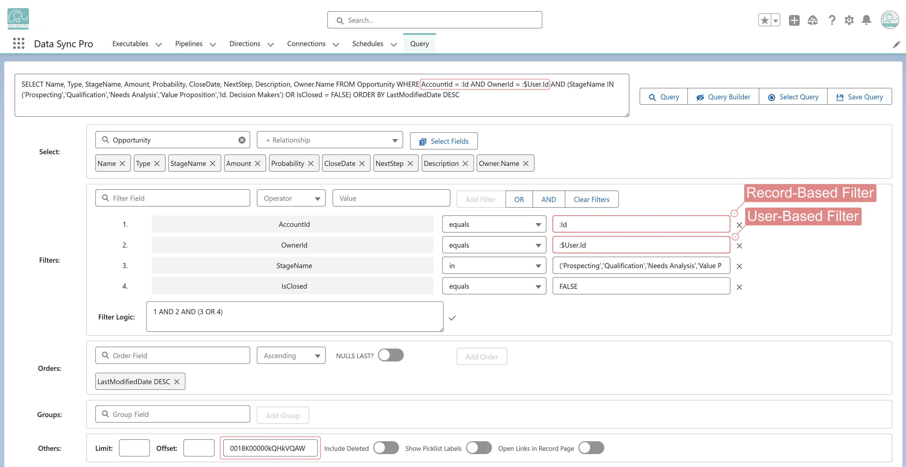

A dynamic filter lets query filters adjust automatically at runtime — based on record context, the current user, DSP mapping expressions, or custom Apex logic — so queries adapt to the data or the user instead of relying on hard-coded values.
How it works:
:FieldName syntax, including relational fields like :Account.OwnerId. In Query Builder, enter a static Context Record ID to test the filter. On a Lightning Record Page, the current record becomes the context automatically at runtime.:$User.Id, :$User.DirectReports, :$User.Team, or :$UserRole.Team to filter dynamically based on the logged-in user. Commonly applied to reference fields pointing to the User object.:[ ... ] to evaluate it at runtime — for example, :[BLANK_VALUE(Reason__c, "Default Reason")], :[ADD_DAYS(TODAY(), -30)]. Useful when a filter value needs to be computed from functions, formulas, or combined logic.DynamicFilterValue interface in an Apex class and reference it as :MyApexClass.All dynamic filter values must be prefixed with a colon (:) to trigger runtime evaluation.
